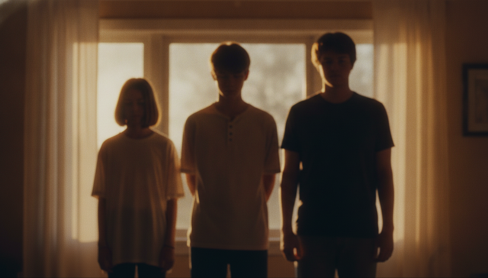
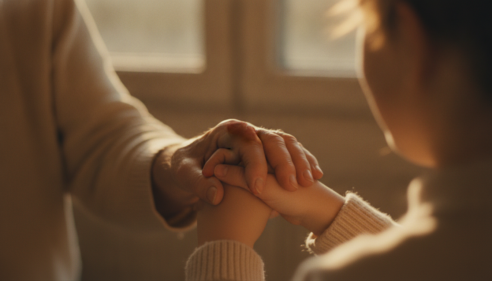

不是「要他做什麼」，而是讓他喜歡來、願意留下來——這場討論，從這個轉念開始。
這是一場為「青年壇主班」設計課程的腦力激盪——目標不是要求二代去做事，而是先讓他們喜歡來、願意留下來：用體驗、遊戲、分組互動，讓孩子理解父母在忙什麼、感受「家有佛堂」的好處；同時也替已扛起重任的賢德學長姐充電、療癒、補德。
整場討論一開始就確立了最重要的方向轉變：先談情感，再談任務。
「叫他做什麼，他下次就不來了。」對二代而言，把「接班、做事」當開場是反效果。重點要放回情感與喜歡——先讓孩子認識我們、喜歡我們、願意留下來，這是最初步、也最重要的一步。
理解先於行動：要讓孩子體諒父母在忙什麼，而不是厭惡父母為何不陪自己。課程因此以實作／體驗為主、觀念為輔——情感連結往往發生在活動與遊戲裡，而非單向講課。
佛堂不是只有你父母而已，我們都是你的家人。
要讓他喜歡來，他才會想要來。把那個「想來」的衝動培養起來，比較重要。
學員組成複雜，是討論反覆回到的難點——同一堂課，要同時打中三群很不一樣的孩子。

被父母半推半就帶來，「非來不可」的理由薄弱。要先給他「家有佛堂的好處」，讓他有想來的衝動。
已經聽過很多觀念，不能再一直「叫他做什麼」。要的是被看見、被滋養，而不是又一輪任務。
課程要能真正「打中」他們，否則完全沒打在身上。內聖、自我修為，是他們最需要補的一塊。
從國中、高中到出社會，「range 還是很大」；國高中、男女差異都是挑戰，彼此不見得願意一起玩。
賢德的孩子希望有針對自己團隊設計的班；賢德班只有兩天，內聖與自我修為放不進去，想藉壇主班補上。此班相對寬鬆，本質是一個「青年壇組班」。
在談課程之前，先得面對最現實的一關——出席與交通。
與其每次另辦活動，不如讓孩子固定能來上進階班——只要常出現在面前，辦活動時就不會忘記把他們「撈上來」。
這是討論最熱烈、產出最多的部分——一個接一個被「接住」的可行設計。
仿夏令營，每組平均配置不同年齡層；有經驗者當小班長「大的代小的」，依地區分組最實在，每組安插一位「住公堂、出過力」的種子傳遞初心。等於強迫他們認識新朋友。
每組把成員名字往外延伸：你父母在佛堂是什麼角色、在做什麼？上台報告「他們認為的父母在忙什麼」。推進邏輯：討厭父母 → 理解父母 → 變成父母。
不記名寫下「你是什麼原因來的」投入筒子，隨機抽出討論。製造「原來這裡可以講真話」的氛圍——後學只想聽真的，不想聽場面話。
講「家有佛堂的好處」：把准考證放佛桌、求道後脾氣改變、命運不同等具體見證。效法基督教「逢人就講」，由走過來的人現身說法。
★ 被反覆強調為關鍵找走過親子糾結的親子做類 Podcast／訪談，剪成「搜查線」式短片（可馬賽克、可剪多段）。預先剪輯使其「可控、不會燒起來」，呈現父母開荒背後的虧欠與糾結。
仿基督教小組替彼此禱告：被抽到者說出近期困擾，全組牽手一起祈福。是信念的傳遞與集氣——但「好的很好，不好的超尷尬」，需要拿捏。
借鏡點傳師經驗：什麼都不用講，輪流抱一下。用於化解新舊賢德的疙瘩——「越解釋越慘，不如抱一下；抱一下不能解決就抱兩下」。依各地文化選擇用寫的或用抱的。
七個點子的共同精神：
讓孩子知道，這裡是
「願意聽、可以講真話」的地方。
為什麼以前的二代不怨父母，
現在的孩子會？
因為父母在賺天地，是看不到的。
父母出去打三份工，是為了全家活下去。孩子能感受到那份辛苦，特別懂事體貼。
那年代拚聯考、沒空來佛堂，平日父母不在、孩子在補習班，沒有「父母應該陪我」的期待；父母從佛堂回來會帶東西、講出去玩的行程，所以不會討厭佛堂。
孩子感受不到它和「生存」一樣重要，於是難以理解、產生情緒。
現在孩子太自由、想法多，會直接問「我為什麼要接受你這樣」。現在的受苦多是「心靈上的受苦」，而非肉體吃不飽——這是打罵教育的最後一代、時代的分界點。

見證的力量，在於「多元視角」——自己家也許給不出完整答案，但孩子看到別人家因父母付出而改變，就不會困在自己家的傷口裡。
針對已經很懂事、實際在扛重任的這群人，方向很明確。
打子彈在「老的」身上時，要同時關注「小的」反應——水龍頭切大，小的別被沖走。
這群人之間的疙瘩，往往是內心問題、解釋不清——卻是最需要被接住的。
有些學長帶不動人，轉而用嚴格的講話方式；底下覺得「標準很爛」，開始有保護自己的機制與互相攻擊。
年輕賢德學長姐——老師在、又沒人聽我的，「我到底要定位在哪裡」。
很會帶的人都當老師、或有別的出口；留下來的反而卡住。
很久沒回去的人找不到同溫層、跟核心差二十歲，反而「覺得回去很可怕」，寧可待在熟悉的區域。
很多疙瘩解釋不清也破不了。唯一能做的，是效仿先佛的方式——用擁抱、寫一句話等遊戲，強迫見面、釋懷、破冰、強迫熟悉。
這次的班，「頂多做到讓孩子先理解父母」就很好——情緒處理，交給各系列班長期進行。
讓孩子感受到「住公堂、家有佛堂」實際帶來的改變與好處。
讓孩子看懂父母在忙什麼、為什麼要做這些事——這次只求「先理解」。
方法論共識：以體驗、遊戲、分組互動、見證分享為主；賢德區塊則強化內聖德性、提供充電療癒與破冰橋段。會中已有人把紀錄 PO 上群組，提議「收整一下、再約下一次」繼續深化。